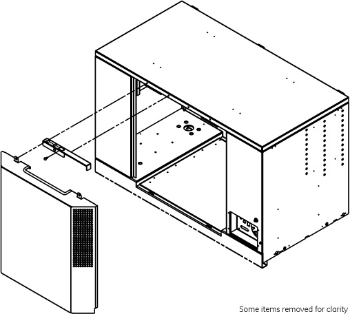
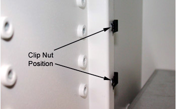
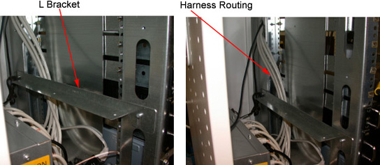
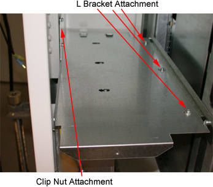
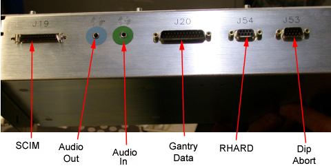
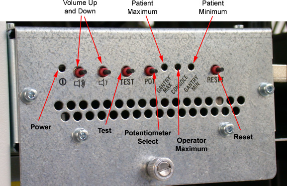
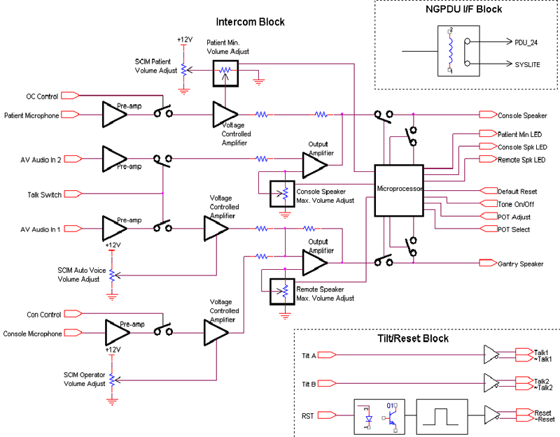

Operating Documentation
Direction 5193891-800, Rev# 5
LightSpeed 5.X Pro16 Limited Access Service Information (Adv)
Operating Documentation |
| Required Persons | Preliminary Reqs | Procedure | Finalization |
|---|---|---|---|
| 1 | Timing Not Applicable | 20 mins |
The DARC NODE and SDDA (used on GOC3) may be up upgraded to a DARC2 and ICOM (Intercom and Prescribed Tilt Module).
After the DARC2 Node has been replaced and loaded with software, several steps/tests are required:
Perform DARC OS software load from Host per LFC
Perform DARC Apps software load from Host per LFC
Communication and verification within the DARC2
Communication to the IG Node(s) and DARC2
Recon Data Path Diagnostic
Resave of the System State Reconfig Info
Sanity scans
| NOTE: | Jarrell DARC2 and Jarrell IG Nodes require a software release of 06MW29.7 or greater. |
| Last Revised: | 20 September 2007 |
| Item | Qty | Effectivity | Part# | Manufacturer | |
|---|---|---|---|---|---|
| Standard Service Toolkit | 1 | - | - | - | |
| Item | Qty | Effectivity | Part# | Manufacturer |
|---|---|---|---|---|
| DARC Node | 1 | - | 2362870 | - |
| SDDA Node | 1 | - | 2362873 | - |
| Cables | 6 | - | - | - |
| Item | Qty | Effectivity | Part# | Manufacturer | |
|---|---|---|---|---|---|
| DARC2 (Westville) | 1 | 4/8/16-slice GDAS & 16-slice MDAS | 5114772 | Omni Tech Corp Dedicated Computing | |
| - | - | 4/8-slice MDAS | 5114772-2 | Omni Tech Corp Dedicated Computing | |
| - | - | 4-slice SDAS | 5114772-3 | Omni Tech Corp Dedicated Computing | |
| DARC2 (Jarrell) | 1 | 4/8/16-slice GDAS & 16-slice MDAS | 5147442 | Omni Tech Corp Dedicated Computing | |
| - | - | 4/8-slice MDAS | 5147442-2 | Omni Tech Corp Dedicated Computing | |
| - | - | 4-slice SDAS | 5147442-3 | Omni Tech Corp Dedicated Computing | |
| ICOM Node | 1 | - | 2404320 | - | |
| GOC4 Chassis HLA | 1 | - | 2378862-2 | - | |
| Bracket, ICOM Lower | 1 | - | 5114923 | - | |
| Bracket, ICOM Upper | 1 | - | 5114924 | - | |
| Clip Nuts | N | - | 5122710 | - | |
| Screws | N | - | TBD | - | |
| Filler Panel | 1 | - | 2366442-31 | - | |
| Assy, Cable Bulkhead | 1 | - | 5116139 | - | |
| Cable, Gantry Data J20 | 1 | - | 5116138 | - | |
| Cable, SCIM | 1 | - | 5116133 | - | |
| Cable, RHARD | 1 | - | 5116134 | - | |
| Cable, DIP Abort | 1 | - | 5116135 | - | |
| Cable, Audio - IN | 1 | - | 5116136 | - | |
| Cable, Audio - OUT | 1 | - | 5116137 | - | |
| All cable connector screw-locks must be finger-tightened, only. Do NOT use any tool to tighten cable screw-locks. | |
| Follow all PPE, LOTO, and all other general safety practices. | |
| Condition | Reference | Eff |
|---|---|---|
Understand the conventions used in this publication | - | |
Only trained service personnel should service the GE CT Scanner. | - | - |

Save System State, before continuing with this procedure.
Select one of the following methods to Power OFF the Operator Console:
If Applications are up, click on the [Shut Down] button and select [Shutdown] .
| (For 06MW03.X Software) Wait 1-2 minutes after the “System halted” message appears, to allow the DARC Node to properly power-down. SW release 06MW29.7 has corrected this issue. | |
If Applications are down, open a Unix Shell at the Toolchest . Type:
{ctuser@hostname} halt
The Operator Console monitor will display a 'System halted' message when it is acceptable to power OFF the Operator Console.
Power OFF the Operator Console at the front panel switch. See Illustration 1.
| NOTE: | Do not turn off the DARC2 Node Rear Power Switch (if present). |
Illustration 1: Power Switch

Loosen the two captive screws at the bottom of console. Refer to Illustration 2.
Illustration 2: Front Cover Removal - Global Consoles

Rotate the bottom of the cover outward and upward, until it may be lifted free of the console at the top.
Loosen the two captive screws at the top of the rear cover. Refer to Illustration 3.
Illustration 3: Rear Cover, GOC3

Tilt the cover backward, so the top moves away from the console.
Lift the cover away, so that the tabs disengage from the bottom lip of the opening.
To reinstall, reverse the previous steps.
Visually verify proper labeling of each cable and disconnect all rear DARC Node cables. If necessary, add a label to each cable for clarity. Specifically,
Disconnect and label the power plugs from back of DARC.
Disconnect and label the SCSI cable from DARC.
Disconnect and label the Ethernet cable from DARC (the one to the IG).
Remove and label the RHARD cable from SDDA to the DARC.
Disconnect and label the Fiber cable from the DARC.
Disconnect and label the Ethernet cable from the DARC (the one to the Host Computer).
| NOTE: | Refer to the schematic located on the rear console cover for cable connection details. |
| NOTE: | For a scalable PDF version of the GRE schematic
diagram, click on the following PDF icon.
|
Remove and retain the four (4) front mounting screws and slide out the DARC Node.
Remove all the rear cable connections to the SDDA. Verify each cable label is present and clearly marked, if necessary add a label to each cable for clarity.
Remove and retain the four (4) front mounting screws and slide out the SDDA.
Install the filler plate where the SDDA used to be present.
| NOTE: | Refer to the schematic located on the rear console cover
for cable connection details. The schematic is also available in GRE Interconnect (2378862SCH). |
Install new (GOC4) rear fan assembly, before proceeding. Refer to Install GOC4 Rear Fan Assembly on GOC3.
Verify the replacement DARC2 Node is correct for the Site DAS Type. Refer to the color-coded sticker located on the front panel of the DARC2 Node for DIP type information.
Illustration 4: Jarrell DARC2 Node
(Sheet 1 of 3)

(Sheet 2 of 3)

(Sheet 3 of 3)

Illustration 5: Westville DARC2 Node
(Sheet 1 of 2)

(Sheet 2 of 2)

Slide the replacement DARC2 Node into the Operator Console from the front.
Replace the four (4) front mounting screws on the front of the DARC2 Node.
Reconnect the DARC2 Node cables, using Illustration 4 or Illustration 5 above as a guide (Refer to the proper illustration, depending on DARC2 Node version.)
| All cable connector screw-locks must be finger-tightened, only. Do NOT use any tool to tighten cable screw-locks. | |
If present, verify the power switch located at the rear of the DARC2 Node is in the ON position.
Attach 2 mounting clip nuts as shown below.
Illustration 6: Clip Nut Position

Route ICOM harness along side of the rear vertical rail and out the back of console chassis.
Attach L Mounting Bracket to the vertical rails using existing 4mm threaded holes. Use the second set of holes from the bottom. Place ICOM harness behind L Mounting Bracket as shown below.
Illustration 7: Harness Routing and L Bracket

| NOTE: | Take caution not to drop the mounting screws or clip nuts behind the power box. |
Attach the Upper ICOM support bracket using Qty. 2, 4mm x 16mm screws to the clips installed in step 2 and Qty. 3, Phillips head 4mm x 8mm screws to the L bracket.
Illustration 8: L Bracket and Clip Nut Attachment

Place ICOM on top of Upper ICOM support bracket and slide the rear tabs into service slot. This slot supports the ICOM during cable installation.
Connect cable harness part # 5128406 to the appropriate locations on the ICOM per the cable labels.
Illustration 9: Locations on ICOM

Allow a 6 inch service loop above the L shaped bracket and than tie-wrap this harness to the back vertical rail.
Make sure power cord for ICOM is routed up through back right corner of Upper support bracket to rear of ICOM.
Make sure Power switch at back of ICOM is turned on.
Slide ICOM out of service slot, place on Upper support bracket, and push ICOM straight back until the rear tabs lock into rear hold down tabs of support bracket.
Tighten down the thumbscrew on front of ICOM box.
Remove the cable interface panel (next to power box) at the rear of console. Install the Gantry Data cable J20 to the panel using jackscrews provided with cable harness and reinstall the panel.
Connect the audio in/out cables (green/blue connectors) from ICOM to PC.
Connect J54 RHARD cable from ICOM to DARC2 bottom connector.
Connect J53 DIP X-ray abort cable from ICOM to DARC2 top connector.
Route J19 SCIM cable from ICOM out the back of console to the SCIM module.
Re-install the Console power switch assembly. Make sure the switch comes out slightly from the edge of the console.
Power ON the Operator Console at the front switch.
At the DARC2 Node verify the front panel Power (PWR) LED is on. If not press the front panel power switch (hold 3-10 seconds) to apply power to the DARC2 Node.
At each IG Node, verify the front panel Power (PWR) LED is on. If not press the front panel power switch (hold 3-10 seconds) to apply power to each IG Node. See
Illustration 10: Jarrell IG Node
(Sheet 1 of 2)

(Sheet 2 of 2)

Illustration 11: Westville IG Node
(Sheet 1 of 2)

(Sheet 2 of 2)

Stop Applications from auto-starting at the 5 second PINK Box.
The DARC2 Node must be up to load the OS (Operating System and DARC Application software. Perform the telnet command on the DARC2 Node to verify communication, as follows:
At the Toolchest, with Application software down, open a Unix Shell.
Perform the telnet command to the DARC2 Node from the Host Computer:
{ctuser@hostname} su -
Password:<password>
| NOTE: | If the Password has not been modified by the site and is not known, the correct course of action is to contact Local GE Service. |
[root@hostname] service cliservice start
dpcproxy server will be reported as already running or restarted
[root@hostname] telnet localhost 623
Trying 127.0.0.1...
Connected to localhost.
*** Indicates cliservice proxy server is running ***
Escape character is '^]'.
Server: darc
Username: <Enter>
Password: <Enter>
Login successful << *** Indicates the SOL connection is established ***
dpccli> exit
Connection closed by foreign host.
[root@hostname]
| NOTE: | If the telnet connection fails: Load the SOL CD, for current version of Software into the DARC2 Node and press the DARC Node reset switch (or re-power DARC2 Node if necessary). SOL CD will auto-eject when completed. Verify the DARC2 Node is running on the Host Computer using the ifconfig command. Verify the Ethernet cabling between the Host Computer (port C) and DARC2 Node. |
Confirm the Host Computer Software type. Examples are shown, the software version output should match the Software media to be loaded.
Open a Unix Shell.
Type the following to verify software version information. Examples are provided. The examples are not actual output.
{ctuser@hostname} swhwinfo << for Apps version
(year)MW(fiscal week).(fiscal day).hardware revision info here
Example 1: 06MW03.4.V40_H_V64_G_GTL
Example 2 (supports Jarrell hardware): 06MW29.7.V40_H_V64_G_GTL
| NOTE: | If the revisions do NOT match the software media to be
loaded, locate the proper software set. If the software set cannot
be found or ordered, a full LFC will be required for the Operator
Console. If the revisions match the software media to be loaded, continue with the load procedure |
{ctuser@hostname} swhwinfo –o << for OS version
Example:
Release: GEHC/CTT Linux 4.3.16
Built: Tue Jul 12 12:29:10 CTD 2005
| NOTE: | Confirm that the results match the Operating System version and Software Build Date shown on the OS and Applications DVDs. |
The DARC2 Node must be loaded with the OS and Application software from the Host Computer to the DARC2 Node. Set-up the DARC2 Node Boot Order BIOS to allow the software to load from the Host Computer. Perform the DARC2 Node OS (Operating System) load as described in the LFC (load From Cold) procedure for the software set being used. Perform the DARC2 Node Application software load as described in the LFC (Load From Cold) procedure for the software set being used. Return the DARC2 Node Boot Order BIOS to avoid problems with the DARC2 Node Motherboard bootup. Refer to the appropriate LFC procedure and follow the sub-sections after reading the DARC Subnet information outlined below:
| NOTE: | The OS (Operating System) and Application software version loaded onto the DARC2 Node must match the OS and Application software versions loaded on the Host Computer. |
Perform the DARC2 Node OS (Operating System) load as described in the LFC (Load From Cold) procedure for the software set being used.
| NOTE: | If the OS software fails to load successfully on the DARC2 Node from the Host Computer. |
Boot Order BIOS
Refer to the “LFC - DVD OS Installation on DARC” section of the appropriate LFC Procedure
Perform an OS load on the DARC2 Node from the Host Computer per the normal instructions.
Perform the DARC2 Node Application load as described in the LFC (Load From Cold) procedure for the software set being used.
| NOTE: | If the DARC Application software fails to load successfully on the DARC2 Node from the Host Computer, verify the Boot Order BIOS for the DARC2 Node has been properly set up per the LFC procedure |
Perform a DARC2 Applications software load on the DARC2 Node from the Host Computer per the normal instructions. Refer to the DARC Subnet Note below.
| NOTE: | DARC Subnet Address Information: The following procedure
should be performed if your customer Ethernet hospital backbone begins
with 172.16.0.xx, OR if the scanner will connect to a device with
an IP address of 172.16.0.xx.
|
Perform the DARC2 Node Boot Order BIOS as described in the LFC (Load From Cold) procedure for the software set being used.
Boot Order BIOS reset
With Application Software Down, the DARC2Node must be checked to verify communication between the Host Computer and the DARC2 Node. Perform ping and rsh commands on the DARC2 Node, as follows:
| NOTE: | For a Ethernet cabling connection issues, use the ethtool command (ethtool –p eth# where # represents the Ethernet address)
as root on the Host Computer, DARC2 Node or IG Node to determine if
the Ethernet cable is correctly connected. The port will blink or
flash when activated and <Ctrl+C> will stop the
test. This command must be performed as root. Open a Unix Shell and type the following
|
At the Toolchest, with Application software down, open a Unix Shell.
| NOTE: | If the DARC login prompt [root@darc] is not present, then the Application software load has not been successful. If the DARC login prompt [root@localhost root] is present, then reloading the DARC Node OS again per the procedure. If ping darc command fails perform an ifconfig on the Host and verify the DARC is RUNNING and the address is correct. Check the Ethernet cable. Re-power the Operator Console, after a halt, as required to troubleshoot. |
Ping the DARC2 Node:
{ctuser@hostname} ping darc
Verify ping is successful.
Output similar to the following will appear:
PING darc (172.16.0.2) from 172.16.0.1 : 56(84) bytes of data. 64 bytes from darc (172.16.0.2): icmp_seq=1 ttl=64 time=0.157 ms
Press <Ctrl+C> to stop ping process.
Output similar to the following will appear:
--- darc ping statistics ---
4 packets transmitted, 4 received, 0% loss, time 3000ms
rtt min/avg/max/mdev = 0.134/0.168/0.209/0.031 ms
Remote Shell to the DARC2 Node:
{ctuser@hostname} rsh darc
Last login: Thu Oct 9 11:17:35 on ttyS1
{ctuser@darc}
Verify ctuser@darc prompt is present.
Verify the DARC2 Node DIP board type (see table, below).
{ctuser@darc} cat /proc/driver/dip
| DIP Board Type | Example Output (updated Sept 2006) |
| GDAS or MDAS 16-Slice | DIP Device Driver Version x.x compiled date time MDAS 16-Slice DIP Installed: 2363229 B - or - 2363229 C Jarrell must be version C Westville may be version B or C |
| GDAS or MDAS 8/4-Slice | DIP Device Driver Version x.x compiled date time MDAS 8/4-Slice DIP Installed: 2375741 E - or - 2375741 F Jarrell must be version F Westville may be version E or F |
| SDAS 4-Slice | DIP Device Driver Version x.x compiled date time SDAS 4-Slice DIP Installed: 2378286 D - or - 2378286 E Jarrell must be version E Westville may be version D or E |
Verify the DARC2 Node DAS Interface Processor Board (DIP) Diagnostics pass.
{ctuser@darc} DipDiag -x 1,2,3,4,5,6
| NOTE: | Because tests 7 and 8 require the installation of a loopback cable, they are not being performed. |
12:05:40 opening LINUX device /dev/dip
creating H16 dip interface
| NOTE: | IGNORE the H16 reference in the previous line. |
DIP PN : 2326523 B
| NOTE: | An example of the DAS Interface Processor Board (DIP) is provided. The specific DIP Board & Revision information will be identified for the DARC2 Node type. |
test 1 Passed X-ray Enable Relay test 2 Passed Test FEC Bit test 3 Passed Test EDDR Bit test 4 Passed Test Magic Number Register fill mem write to dip took 4.714 sec verifying memory read from dip took 19.469 sec test 5 Passed Memory Test test 6 Passed Interrupt Test 1 loops 0 failures
| NOTE: | The Unix Shell will be used again, so do not exit or close at this time. |
Remove the power for each IG Node, then re-power each IG Node with the DARC2 Node up and able to Remote Shell (rsh darc).
At each IG Node, verify the power is OFF. If power is On for any IG Node, then press the front panel power switch (hold 3-10 seconds) to remove power to each IG Node present in the Operator Console.
Wait 20 seconds.
At each IG Node, press the front panel power switch (hold 3-10 seconds) to apply power to the IG Node(s).
Wait 2 minutes for each IG Node present in the Operator Console to boot up.
The DARC2 Node must be up to check the IG Node(s). Perform ping and rsh commands on the DARC2 Node, as follows:
| NOTE: | For a Ethernet cabling connection issues, use the ethtool
command (ethtool –p eth# where # represents the Ethernet address)
as root on the Host Computer, DARC2 Node or IG Node to determine if
the Ethernet cable is correctly connected. The port will blink or
flash when activated and Ctrl-C will stop the test. This command must
be performed as root.
|
At the Toolchest, with Application software down, if necessary, open a Unix Shell.
Ping IG Node #1:
{ctuser@darc} ping ig1
Verify ping is successful.
Press <Ctrl+C> to stop ping process.
Remote Shell to the IG Node #1:
{ctuser@darc} rsh ig1
Verify ctuser@ig1 prompt is present.
Exit from the IG Node #1 Remote Shell:
{ctuser@ig1} exit
Ping IG Node #2:
{ctuser@darc} ping ig2
Verify ping is successful.
Press <Ctrl+C> to stop ping process.
Remote Shell to the IG Node #2:
{ctuser@darc} rsh ig2
Verify ctuser@ig2 prompt is present.
Exit from the IG Node #2 Remote Shell:
{ctuser@ig2} exit
Ping IG Node #3:
{ctuser@darc} ping ig3
Verify ping is successful.
Press <Ctrl+C> to stop ping process.
Remote Shell to the IG Node #3:
{ctuser@darc} rsh ig3
Verify ctuser@ig3 prompt is present.
Exit from the IG Node #3 Remote Shell:
{ctuser@ig3} exit
Exit from the DARC Node Remote Shell:
{ctuser@darc} exit
{ctuser@hostname}
In the following test, the Disk Array is configured with 2 disks (internal to the DARC2 Node). Visually verify the entire output is successful from the command script performed. The final output line ‘gre-raid success’ does not mean the 2 Disk Array is good.
| NOTE: | Application Software must be down. |
Type the following:
{ctuser@hostname} rsh darc
{ctuser@darc} sudo gre-raid -z -c
answer: yes
Verify the create partitions diagnostic passes and all output looks good.
{ctuser@darc} sudo gre-raid -a
Verify assemble diagnostic passes and all output looks good.
{ctuser@darc} sudo gre-raid -q
Verify query diagnostic passes and all output looks good.
{ctuser@darc} exit
{ctuser@hostname}
| NOTE: | The Unix Shell will be used again, so do not exit or close at this time. |
In the following test, the Image Generator Node(s) RAC (Recon Accelerator Card) will be tested.
| NOTE: | Application Software must be down. |
{ctuser@hostname} racdiags
| NOTE: | The command racdiags will test up to three (3) IG Node
RAC’s. If only one (1) IG Node is present in the Operator Console
ignore any errors associated with IG2 or IG3. To test a single IG
Node perform the following command: {ctuser@hostname} racdiags 1 |
Verify rac diagnostic passes for each IG Node configured in the Operator Console.
| NOTE: | The Unix Shell will be used again, so do not exit or close at this time. |
{ctuser@hostname} st
The Reconstruction (not Scan) portion of the system can be tested at this point.
Verify the FSA Box is Idle (not Paused). If paused, click on Recon Management and Restart the Queue.
Select [RETRO RECON] on the left Monitor.
Select [RAT GOLD] series.
Select [SELECT SERIES] .
Select [CONFIRM] .
Verify the image(s) reconstruct and are displayed.
Select [QUIT] .
Select the Service Icon.
Select [DIAGNOSTICS] .
Select [Recon Data Path] .
Select [1] and [ALL]
Select [RUN]
Verify Recon Data Path tests pass.
Select [Dismiss] .
After the DARC Node software load (OS and Apps), the Reconfig Info file must be re-saved on the System State DVD-RAM.
Insert the System State DVD-RAM into the SCSI Tower DVD RAM drive.
Wait until the DVD drive is ready (i.e., until the front panel green LED is no longer lit).
Select: Service icon to access the CSD (Common Service Desktop).
Select: [Utilities] .
Select: [System State] .
Illustration 12: System State GUI

Select [Reconfig Info] .
Select [Save] .
If applicable, select [Yes] when the following message appears: System State Media Status: Please insert a DVD into the drive and press Save again.
Illustration 13: Save System State Ready

| NOTE: | Verify that the "Save" of System State was successful. If not, correct any errors and re-save the Reconfig Info file on the System State DVD-RAM. A message at the end of the Save should state: Save/Restore System State: Completed Successfully. |
When completed, select [CANCEL] .
| Do NOT select [DISMISS] more than once. Doing so will result in the GUI becoming hung, and the System State will be unusable. Should this occur, Re-Save the System State again. | |
When completed, select [Dismiss] .
Close the Service Desktop window at the upper left corner of the screen
Overview
The Intercom block enables communication between the console operator and the patient on the table. The communication direction through the Intercom can be switched by depressing the TALK button on the SCIM keyboard. The operator can speak to the patient by depressing the TALK button (ON). When the TALK button is released (OFF) the operator can then listen to the patient.
When Auto-voice is playing, the operator can listen through the Console speaker on the Auto-voice R channel while the TALK button is released (OFF). At the same time the patient can listen through the Table speaker on the Auto-voice L channel.
If the operator depresses the TALK button (ON) while Auto-voice is playing, the Intercom will disable the Auto-voice sound and will switch the sound source to the Console microphone output. The Console microphone output is amplified and routed to the Host computer's audio input for the Auto-voice recording. The Auto voice recording will be managed by the host computer's software. It will be up to the software to start and stop recording the sound.
Intercom Board Adjustments
The GOC 4 console intercom board has been completely redesigned from the GRE console. It is no longer located in the SDDA. It also has new potentiometer adjustment controls. See Illustration 14 below.
Illustration 14: Intercom Board Adjustments

Volume Adjust
Press the Up and Down controls to adjust the selected volume.
Test Button
Press the Test button to play a test tone.
Potentiometer Select
Tap to cycle through the volume control potentiometers, Patient Minimum, Operator Maximum, and Patient Maximum.
Patient Maximum
This is the maximum volume that the patient will here in the room from the operator or from Auto Voice. Select this POT to control the volume to a level that is the loudest/highest volume the patient can receive.
Operator Maximum
This is the maximum volume that the operator will here from the patient or from Auto Voice. Select this POT to control the volume to a level that is the loudest/highest volume the operator can receive.
Patient Minimum
This is the minimum volume that the patient will here in the room from the operator or from Auto Voice. Select this POT to control the volume to a level that is the quietest/lowest volume the patient can receive.
Reset
Resets the volume to the factory presets.
Silkscreen Symbols

Front Panel Buttons and Indicator LEDs

| Button Label | Full Name | Description |
| VOLUME UP | Volume Up | increase the volume of the channel controlled by 'SELECT' |
| VOLUME DN | Volume Down | decrease the volume of the channel controlled by 'SELECT' |
| TONE | Tone Generator | tone generator on/off switch (not operational for AutoVoice) |
| SELECT | POT Select | button that selects which POT to adjust |
| DEFAULT | Default Reset | reset the POTs to the factory default setting |
To adjust digital potentiometers:
Push ‘SELECT’ once to choose the patient minimum POT (the ‘PATIENT MIN’ led should illuminate). Push ‘SELECT’ again to choose the console speaker POT (the ‘GANTRY SPK’ LED should illuminate). Push ‘SELECT’ again to choose the remote speaker POT (the ‘CONSOLE SPK’ LED should illuminate). Pushing ‘SELECT’ a fourth time will deselect all POTs and turn off all LEDs.
Push ‘TONE’ to generate a test tone through the selected POT channel.
Adjust the volume louder by pushing the ‘VOLUME UP’ button, and adjust the volume softer by pushing the ‘VOLUME DN’ button.
Push the ‘DEFAULT’ button to reset the POTs to their factory default setting.
Intercom Functional Diagram
Illustration 15: Intercom Functional Diagram

Verify the “on” LED on left side of ICOM is illuminated.
Perform sanity scans (e.g., scout, axial and helical).
| NOTE: | It the system will not scan or reconstruct, verify the memory on the DARC2 Node is correct (lhinv). Verify the DIP diagnostics pass. Verify the RAC diagnostics pass. |
Verify the images reconstruct and are properly displayed.
Check that all customer functions are operational (intercom, auto voice, network, archive, filming).
Install the front and rear Operator Console covers.
Return the removed hardware per GE recycle procedure.